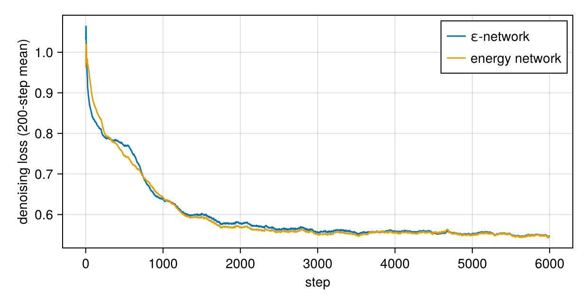
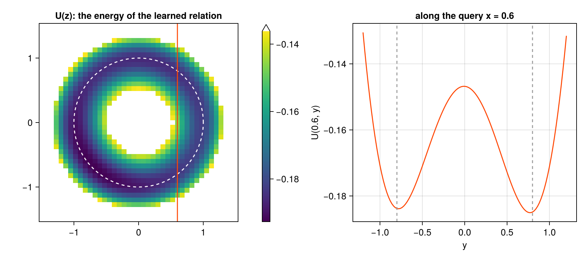

A conservative score: energy-parametrised diffusion
Download as a Jupyter notebook
A diffusion model's noise predictor $\varepsilon_\theta(x, t)$ is a learned vector field, a direct model of the score $-\nabla\log p_t$, and nothing makes it the gradient of anything. The force-field tutorial showed what a direct model of a gradient costs. Here is the fix inside diffusion: the network outputs a scalar energy $E_\theta(x, t)$ and the noise prediction is its gradient,
\[\varepsilon_\theta(x, t) = \sigma_t\,\nabla_x E_\theta(x, t), \qquad s_\theta(x, t) = -\nabla_x E_\theta(x, t).\]
This tutorial trains both kinds of network on the circle of the training tutorial, with the same size, data and number of steps, and compares them. Then it uses what only the energy network has: an energy for the learned relation.
using VariationalDiffusion, Lux, LuxCore, Random, LinearAlgebra, Optimisers, Statistics, Printf
using DifferentiationInterface, Zygote, ForwardDiff
using CairoMakie
const sched = VPSDE()
const FREQ = [0.5, 1.0, 2.0, 4.0, 8.0]
embed(t) = vcat(sin.((2π .* t) .* FREQ), cos.((2π .* t) .* FREQ)) # t scalar or a 1×B row
input(z, t) = vcat(z, embed(t) .* ones(eltype(z), 1, size(z, 2)))
circle(rng, B) = (θ = 2π .* rand(rng, B); vcat(cos.(θ)', sin.(θ)') .+ 0.02 .* randn(rng, 2, B))
f64(x::AbstractArray) = Float64.(x); f64(x::NamedTuple) = map(f64, x); f64(x) = x
const STEPS = 6000Two networks
Both have two hidden layers of 64 units. The ε-network outputs two numbers, the energy network one; the energy network is smooth (swish), because its derivative is what gets trained.
epsnet = Chain(Dense(12 => 64, swish), Dense(64 => 64, swish), Dense(64 => 2))
enet = Chain(Dense(12 => 64, swish), Dense(64 => 64, swish), Dense(64 => 1))
(Lux.parameterlength(epsnet), Lux.parameterlength(enet))(5122, 5057)The energy network becomes a noise predictor by wrapping it in EnergyNetwork. Its noise prediction is a gradient and its input Jacobian a Hessian, so it needs an AD backend that can take second derivatives; forward-mode over Zygote is a good choice for small inputs.
ad = DifferentiationInterface.SecondOrder(AutoForwardDiff(), AutoZygote())Training
The ε-network trains with Lux's usual training loop. The energy network cannot, directly: its loss $\lVert\sigma_t\nabla_x E_\theta - \varepsilon\rVert^2$ already contains a derivative, so its gradient is a derivative of a derivative. denoising_gradient computes it as one mixed second derivative and returns it as an ordinary parameter gradient, which any optimiser can apply.
function batch(rng)
z₀ = circle(rng, 256)
t = 1e-3 .+ 0.2 .* rand(rng, 1, 256)
ε = randn(rng, 2, 256)
return z₀, t, ε
end
function train_eps(rng)
ps, st = Lux.setup(rng, epsnet)
ts = Training.TrainState(epsnet, ps, st, Optimisers.Adam(1.0f-3))
losses = Float64[]
for _ in 1:STEPS
z₀, t, ε = batch(rng)
zₜ = alpha.(Ref(sched), t) .* z₀ .+ sigma.(Ref(sched), t) .* ε
_, l, _, ts = Training.single_train_step!(AutoZygote(), MSELoss(), (Float32.(vcat(zₜ, embed(t))), Float32.(ε)), ts)
push!(losses, l) # mean over both coordinates
end
return f64(ts.parameters), ts.states, losses
end
function train_energy(rng)
ps, st = Lux.setup(rng, enet)
ps = f64(ps)
pred = NoisePredictor(EnergyNetwork(enet), sched; input, ad)
opt = Optimisers.setup(Optimisers.Adam(1e-3), ps)
losses = Float64[]
for _ in 1:STEPS
z₀, t, ε = batch(rng)
l, g, st = denoising_gradient(pred, z₀, t, ε, ps, st)
opt, ps = Optimisers.update(opt, ps, g)
push!(losses, l / 2) # per coordinate, as MSELoss
end
return ps, st, losses
end
t_eps = @elapsed (ps_e, st_e, loss_e) = train_eps(Xoshiro(0))
t_en = @elapsed (ps_E, st_E, loss_E) = train_energy(Xoshiro(0))
(seconds_eps = round(t_eps; digits = 1), seconds_energy = round(t_en; digits = 1))(seconds_eps = 5.8, seconds_energy = 59.1)The energy network is slower per step, the price of a second derivative. Both reach the same loss:
movmean(v, k = 200) = [mean(v[max(1, i - k + 1):i]) for i in eachindex(v)]
fig = Figure(size = (620, 320))
ax = Axis(fig[1, 1]; xlabel = "step", ylabel = "denoising loss (200-step mean)")
lines!(ax, movmean(loss_e); label = "ε-network")
lines!(ax, movmean(loss_E); label = "energy network")
axislegend(ax)
fig
Is the field a gradient?
Wrap both as implicit learners on the same field nodes. A vector field is a gradient exactly when its Jacobian is symmetric, so measure the relative asymmetry $\lVert J - J^\top\rVert / \lVert J\rVert$ of the field around the circle.
eps_pred = NoisePredictor(epsnet, sched; input, ad = AutoZygote())
en_pred = NoisePredictor(EnergyNetwork(enet), sched; input, ad)
nodes = field_nodes(Xoshiro(1), 2; samples = 8)
m_e, m_E = ImplicitDiffusion(eps_pred, nodes), ImplicitDiffusion(en_pred, nodes)
asym(J) = norm(J - J') / norm(J)
φs = range(0, 2π; length = 25)[1:24]
asym_e = [asym(prior_jacobian(m_e, [cos(φ), sin(φ)], ps_e, st_e)) for φ in φs]
asym_E = [asym(prior_jacobian(m_E, [cos(φ), sin(φ)], ps_E, st_E)) for φ in φs]
(ε_network = mean(asym_e), energy_network = mean(asym_E))(ε_network = 0.027802792390256296, energy_network = 4.3147247481958953e-17)The ε-network's field is a few percent away from any gradient. The energy network's is a gradient to machine precision, because it is one by construction.
Queries
The same "$y$ given $x$" queries as in the training tutorial, from above and below:
function queries(m, ps, st)
sols = [first(implicit_infer(m, [x, s * 0.5], [Inf, 0.0], ps, st)) for x in range(-0.9, 0.9; length = 19) for s in (1, -1)]
r = [norm(s.z) for s in sols if s.stable]
return (stable = "$(length(r))/$(length(sols))", radius = round(mean(r); digits = 4), spread = round(std(r); digits = 4))
end
(ε_network = queries(m_e, ps_e, st_e), energy_network = queries(m_E, ps_E, st_E))(ε_network = (stable = "37/38", radius = 0.983, spread = 0.0091), energy_network = (stable = "38/38", radius = 0.9776, spread = 0.0076))Comparable answers, both slightly inside the circle (the smoothing bias of the field nodes).
What only the energy network has: an energy for the relation
For an energy-parametrised predictor, the implicit learner's field is the gradient of a scalar $U(z)$, returned by implicit_energy. The relation is its valley.
U(z) = first(implicit_energy(m_E, z, ps_E, st_E))
grid = range(-1.5, 1.5; length = 41)
Ugrid = [U([a, b]) for a in grid, b in grid]
fig = Figure(size = (900, 400))
ax1 = Axis(fig[1, 1]; aspect = DataAspect(), title = "U(z): the energy of the learned relation")
hm = heatmap!(ax1, grid, grid, Ugrid; colormap = :viridis, colorrange = (minimum(Ugrid), quantile(vec(Ugrid), 0.5)), highclip = :white)
lines!(ax1, cos.(range(0, 2π; length = 200)), sin.(range(0, 2π; length = 200)); color = :white, linestyle = :dash)
vlines!(ax1, [0.6]; color = :orangered)
Colorbar(fig[1, 2], hm)
ys = range(-1.2, 1.2; length = 121)
ax2 = Axis(fig[1, 3]; xlabel = "y", ylabel = "U(0.6, y)", title = "along the query x = 0.6")
lines!(ax2, ys, [U([0.6, y]) for y in ys]; color = :orangered)
vlines!(ax2, [-0.8, 0.8]; color = :gray60, linestyle = :dash)
fig
Along the query line $x = 0.6$ the energy has two minima, the two branches $y \approx \pm 0.8$, at almost the same height (the data are symmetric), separated by a barrier. Point inference returns the minimum in whose basin it starts; the energy also says how good that answer is compared with the other one:
up, _ = implicit_infer(m_E, [0.6, 0.5], [Inf, 0.0], ps_E, st_E)
dn, _ = implicit_infer(m_E, [0.6, -0.5], [Inf, 0.0], ps_E, st_E)
(upper = (y = up.z[2], U = U(up.z)), lower = (y = dn.z[2], U = U(dn.z)), barrier = U([0.6, 0.0]))(upper = (y = 0.7708824722744554, U = -0.18506806231151654), lower = (y = -0.7810248000449574, U = -0.18387918305769635), barrier = -0.1468005095398083)With an ε-network there is no such number: its field is not a gradient, so the "energy" of an answer is not defined.
Summary
| ε-network | energy network | |
|---|---|---|
| the network outputs | $\varepsilon$ (a vector) | $E$ (a scalar) |
| the score | a learned vector field | $-\nabla_x E$, a gradient by construction |
| training | standard loop | denoising_gradient: one mixed second derivative per step |
| cost per training step | 1× | about 3× |
| the learned relation's energy | none | implicit_energy |
stable means | the symmetric part of the Jacobian is positive definite | a local minimum of $U$ |
The implementation note energy.md in the theory vault has the derivation and the validation, including an exact check against a closed-form mixture.
This page was generated using Literate.jl.